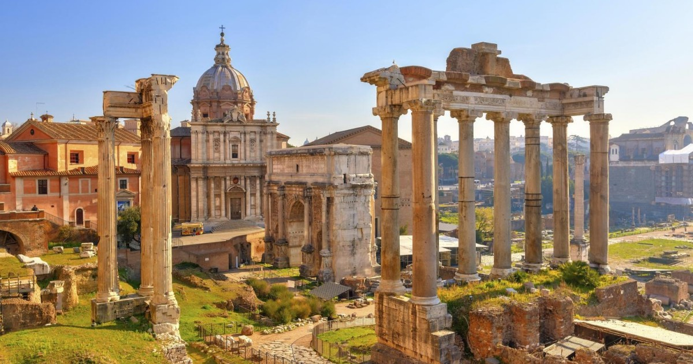
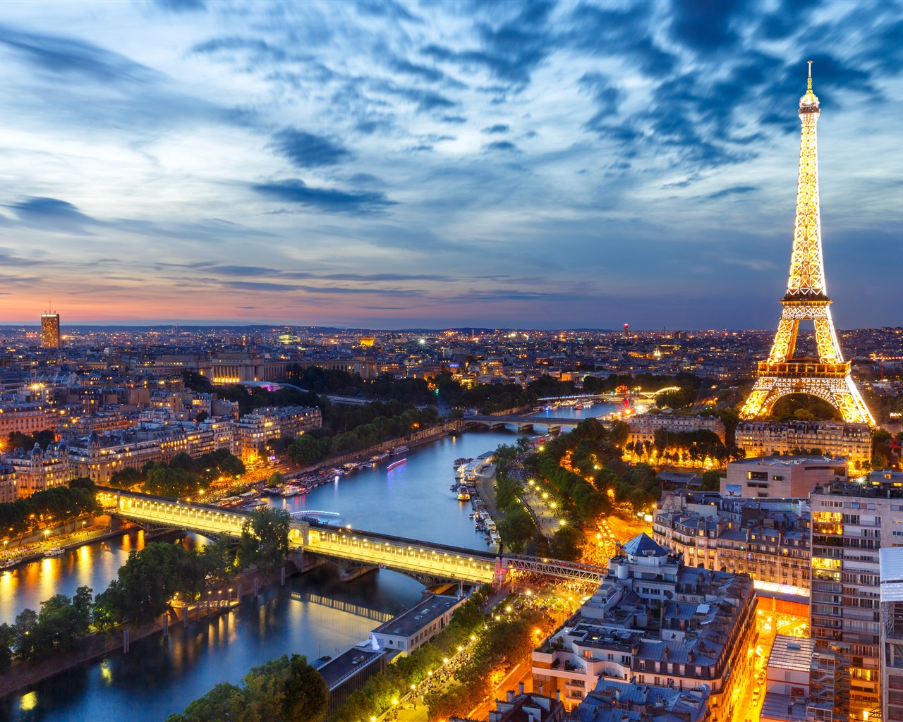
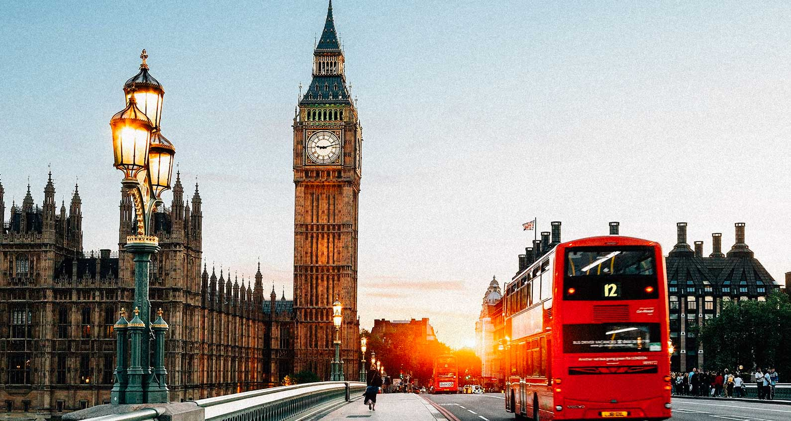
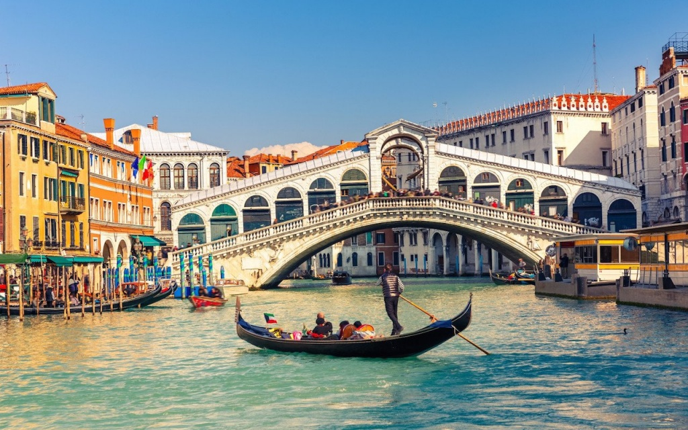
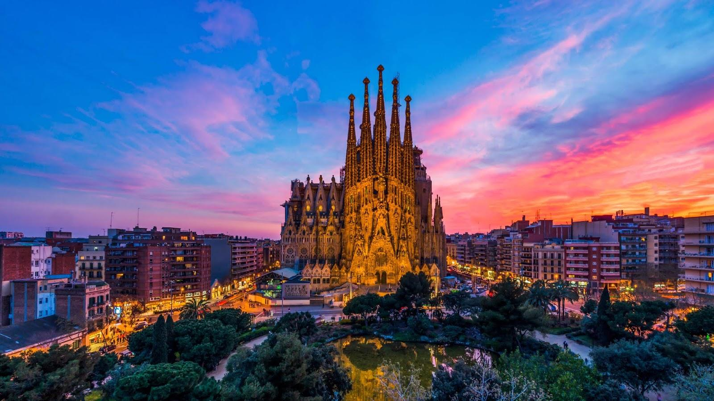
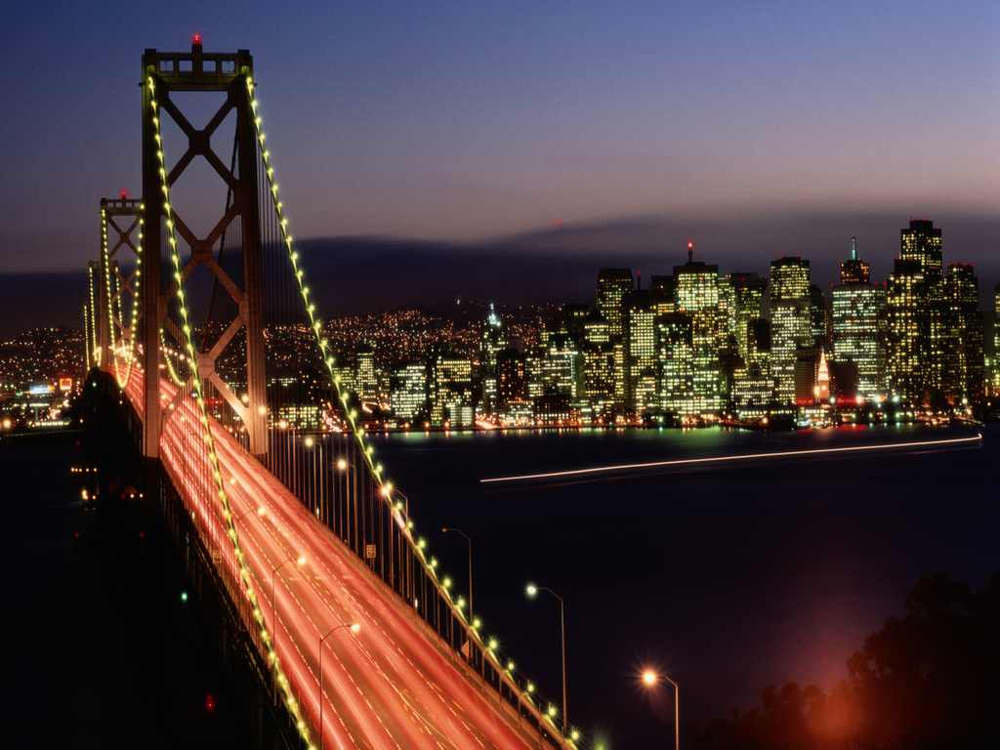

Контекст
Изучаем место прежде, чем предлагать форму.
Архитектура · Интерьеры · Среда
Проектируем архитектуру и интерьеры, которые отражают людей, контекст и время. Внимание к деталям — наш способ мыслить масштабно.
Мы верим, что сильная архитектура не нуждается в громких жестах. Она точно отвечает на задачу, уважает место и остаётся актуальной дольше трендов.
Команда MOTTO объединяет архитекторов, дизайнеров и исследователей. Мы ведём проект от первого эскиза до авторского надзора — чтобы задумка и результат говорили на одном языке.
Наш подход ↗Изучаем место прежде, чем предлагать форму.
Материалы и решения работают, а не притворяются.
Проектируем на годы, а не на один сезон.
Каждый проект — это диалог между функцией, материалом и средой. Вот несколько историй, которыми мы особенно дорожим.

Частная архитектура · 2025

Интерьер · 2024

Общественное пространство · 2024

Реновация · 2023

Интерьер · 2022

Городская среда · 2021
Формируем задачу, исследуем контекст, бюджет и сценарии использования.
Находим концепцию, проверяем её в чертежах, моделях и материалах.
Координируем участников и сохраняем авторский замысел на стройке.
Есть задача?
Расскажите о проекте. Мы ответим и предложим следующий шаг.